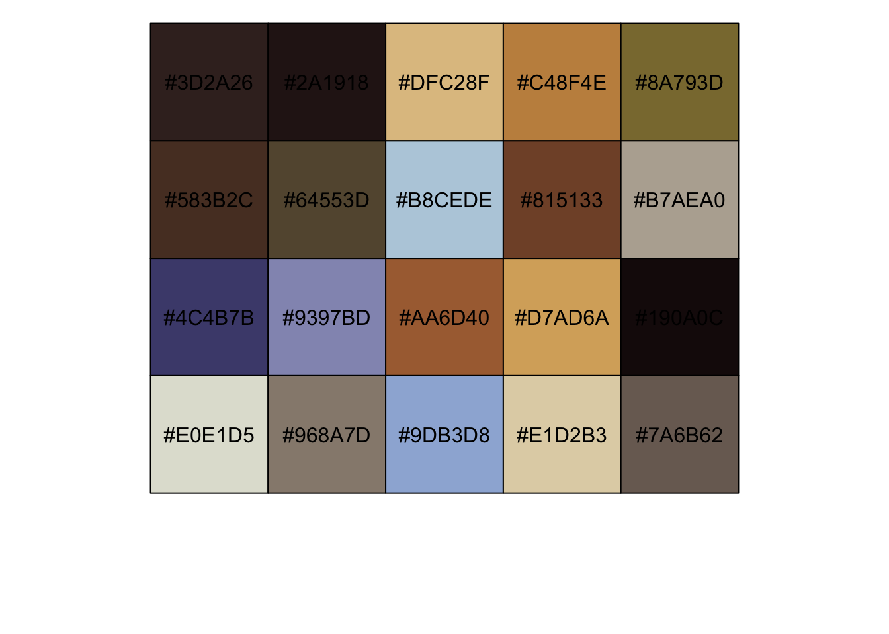
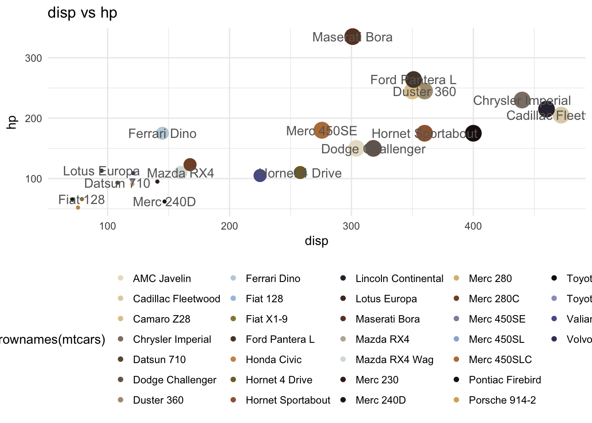

how to build a color palette from any custom image
Andrea Cirillo
17/5/2017
how to build a color palette from any image with R and k-means algo
some weaks ago, I was working on a dataviz to show results coming from an analysis I had performed, and I found myself looking at that default ggplot2 palette, which is optimal in term of discrimination among categories, but nevertheless can not be compared to some wonderful palettes you can see employed within art masterpieces like Monet impression,soleil levant or Michelangelo’s Tondo Doni. Those palettes are coming from years and years of studies around colour theory and pittorical tecniques and, I started thinking, would do a great service if employed as plot’s palettes, with their complentary colours or their balanced set of hues.
{kind=link}
{kind=link}

But, how to do it? The problably most obvious answer would have involved downloading one of these masterpieces, find out a website with point and click colour picking featyre and build a palette from it. Nevertheless since I am a lazy programmer I found an easier way to do it, I found out how to build a color palette from any custom image in R.
what you are going to find here
The post will give you a clear view of how the task was automated, providing detail of the clustering algorithm employed. It will moreover show you a small R package which was developed to ease the application of this process from other users. Finally use cases for the developed algo will be provided, from the most intuitive ggplot2 employment to the more advanced one.
behind the scenes: k-means for image processing
I have to be honest: my first thinking when dealing with this task was not the one I am going to show you. I was actually getting lost following a bad path made of triples of Red Green and Blues, trying to select from frequency tables the most representative ones. But suddenly, after reading a blog post about k-means algorithm the idea was born: let k-means divide the picture into homogeneous clusters, having each one a “center” constituted by an RGB triple and by this way define a palette representative of the picture itself.
the k-means algorithm
To let you maxmismise the fun coming from the rest of the post we have to see here briefly what the k-means clustering algorithm is. This algo is a way to divide a given set of data into k homogeneous groups/clusters, where k stands for a number, like usually n does. How do we do that? The basic and elegant idea behind the algorythm is: measure the difference between data points and look for the clusterisation which minimise this difference within clusters. The typical measure employed here is the euclidean distance, and particularly the squared euclidean distance. We measure with it the distance between points, and we can expand it from 1 to n dimensions. That is why it turns to be effective with such kind of problems where populations can be pertaining to multidimensional spaces. Making it less wordy, let us look at the formula behind the distance. Given two points of a three dimension space \(P=(p_{x},p_{y},p_{z})\) and \(Q=(q_{x},q_{y},q_{z})\) this distance is measured as the square of the distance between the three couples of coordinates raised to the second:
\[ {\sqrt {(p_{x}-q_{x})^{2}+(p_{y}-q_{y})^{2}+(p_{z}-q_{z})^{2}}} \] Now that we know the measure we want to minimize let us have a look at how to find the best possible clusterisation. The typical way adopted from k-means algorithm is working on iterations:
- (a): first iteration randomically assigns a cluster to each data point
- (b): then it measures the centroid for every cluster
- (c): changes cluster assignation moving each data point to the cluster which have the centroid closer to the data point
- (d): measures the euclidean distance within clusters and sums it up to measure the performance of the given clusterisation
- (e): then the algo iterates (b), (c) and (d) until the last step does not obtain sum of distances lower than the previous one.
You may be wondering what exactly a centroid it. To get it just think it is the barycenter of a given set of point. Formally it is the point which minimises the euclidean distance between him and the other points within the group. for a given set of \(n\) points in a $ ^{n} $ space we measure it as follow:
\[ \mathbf {C} ={\frac {\mathbf {x} _{1}+\mathbf {x} _{2}+\cdots +\mathbf {x} _{n}}{n}} \] Now that we know what a k-means algorithm is, how do we apply it to an image?
applying the k-means algorithm to an image
Getting a closer look to an image we find it can be decomposed into reasonably small points, each of which is of a single colour. This is what for instance the pointillisme thought a long time before pc’s. Pointillists started painting on canvas not mixing their colours in greater or smaller colour fields but rather applying them as small points one next to the other. Take for instance this famous painting from Georges Seurat:

Can you see the vibrant small dots?
Decomposing an image to its constitutent points is the first needed step to apply on it every kind of statistical, algorithmical or matematical concept. Once this is done, at least within our mind, we have to find a way to univocally identify every single point. This is easily done in the space, since we are dealing with flat images and the good old cartesian x-y couple will be enough. But what about colours? We are looking here for a way to derive a palette from every kind of possible image, shouldn’t we find a way to “measure” the color of points? To get this done we will resort here to the RGB codification, a convenient way to measure colours firstly introduced during the ’800 which became popular during the age of televisions and electronical monitors (you know, they need a way to measure colours too).
Following this theory there are three primary additive colours: Red, Green and Blue. All other colours can be obtained mixing these three colours in different proportions. Each colour can be therefore decomposed into a triple of this colours. Give a look for instance at this green:

following RGB codification scheme we can decompose it as follow:
- Red 120
- Green 214
- Blue 23
as you can see we now have an objective way to measure and describe colours. We can therefore take our picture and describe it as a set of points each of which with a codified colour, in terms of Red Green and Blue. Let us try to do it for real, importing an image into our R environment.
read the image
As is often the case within the R world, we have a package to help us with this task. The jpeg package, developed by Simon Urbanek provides us functions to import an image and decomposing it into points each of which codified in the terms of the RGB system. Once the package is installed you can run the readJPEG() function to import and decompose every kind of .jpeg image. within our example we are going to employ the Sacra Famiglia Canigiana painting by Raffaello, which contains a wonderful set of vivid colours coming from Raffaello’s studies on the unione painting technique.

To employ it we have to download it into our environment, which can be easily done via the download.file() function. Once we are done with this we can apply the readJPEG function described above, assigning the result to the painting object:
download.file("https://andreacirilloac.github.io/dataviz/images/sacra_famiglia_canigiani.jpg", "image.jpg")
painting <- readJPEG("image.jpg")We now have an object, called painting, composed by a set of triples, where each triple stores values of Red Green and Blue. This object is actually an array, i.e. a multi-dimensional matrix. If you are not familiar with this kind of objects in R you can give a look to the short introduction from Hadley Whickam within Advanced R.
Next logical step is to create an object feasible for k-means algorithm application. We therefore derive from the painting object a new data frame, storing for each point x-y coordinates and our beloved triples:
dimension <- dim(painting)
painting_rgb <- data.frame(
x = rep(1:dimension[2], each = dimension[1]),
y = rep(dimension[1]:1, dimension[2]),
R = as.vector(painting[,,1]), #slicing our array into three
G = as.vector(painting[,,2]),
B = as.vector(painting[,,3])
)just to be sure things are going on as we imagine, let us have a look to the painting_rgb object
head(painting_rgb)## x y R G B
## 1 1 551 0.9490196 0.8941176 0.8823529
## 2 1 550 0.9333333 0.8784314 0.8666667
## 3 1 549 0.9450980 0.9019608 0.8784314
## 4 1 548 0.9215686 0.8784314 0.8549020
## 5 1 547 0.9529412 0.9176471 0.8901961
## 6 1 546 0.9294118 0.8941176 0.8588235run k-means
we are now ready to apply k-means algorithm to our data. It is actually really easy to apply this algo in R. As is often the case with R this quite advanced algo is already made available within the base R package, stored within the function conveniently namet function kmeans(). We just have to pass to this function the dataset over which we want to apply the algo, specifying the number of clusters. We could also specify some other settings, like the maximum number of iterations of above introduced steps (b) (c) and (d).
k_means <- kmeans(painting_rgb[,c("R","G","B")], centers = 20, iter.max = 30)dealing with results
As you can see we applied the kmeans function passing as dimensions R G and B and a number of clusters equal to 30. We also specified 30 iterations as the maximum number of loops to try to converge. We now have a k_means object, what is its shape? let us investigate this running str() on it:
str(k_means)## List of 9
## $ cluster : int [1:247950] 16 16 16 16 16 16 16 16 16 16 ...
## $ centers : num [1:20, 1:3] 0.24 0.165 0.875 0.769 0.54 ...
## ..- attr(*, "dimnames")=List of 2
## .. ..$ : chr [1:20] "1" "2" "3" "4" ...
## .. ..$ : chr [1:3] "R" "G" "B"
## $ totss : num 60652
## $ withinss : num [1:20] 96.2 44.3 43.6 72.5 51.1 ...
## $ tot.withinss: num 1068
## $ betweenss : num 59584
## $ size : int [1:20] 21680 24116 10481 9804 7789 16788 10333 9886 12287 4700 ...
## $ iter : int 7
## $ ifault : int 0
## - attr(*, "class")= chr "kmeans"showing the palette
without analysing every single attribute we can easily locate the centers vector, showing the above mentioned centroids. As you would imagine, those centroids have got three dimensions: one for the R, one for the G and one for the B. And those centroids are points whose minimise the distance from the other points within their cluster. So they are RGB triples representative of homogenous clusters of other RGB triples composing our image. What do you think, is this enough to be a representative palette? Let us check it in the best possible way, i.e. letting our eyes scrutinize them. To do this we are going to leverage the show_col() function from the scales package (once more, thank you Hadley Whickam):
show_col(rgb(k_means$centers))
Here it is our freshly and autonomously made palette, which greatly represents the main hues of Raffaello’s painting.
paletter package to replicate the process
One of the best gifts every R user receives from the R community is the ton of packages available to accomplish nearly every data mining task. This is why I often try to translate my code into packages, especially when it contains some functions which could be useful for someone. This I think is the case for the processing steps we have seen before, as we will see later on. For this reason you can find on Github a packge named paletter, which provides you the palette_maker function, to let you easily apply the abovely introduced algo on your custom image. Paletter is freely available (of course…), is not so badly documented, and you can install it running the following:
library(devtools)
install_github("andreacirilloac/paletter")## Skipping install of 'paletter' from a github remote, the SHA1 (66780b00) has not changed since last install.
## Use `force = TRUE` to force installationonce you will be done with the installation running the algo will be even easier, requiring you to run the palette_maker function, which takes as input the path to the picture and the number of colours you are wishing to derive from it:
library(paletter)
download.file("https://andreacirilloac.github.io/dataviz/images/sacra_famiglia_canigiani.jpg", "image.jpg")
colours_vector <- palette_maker("image.jpg", number_of_colors = 32)## Warning: Quick-TRANSfer stage steps exceeded maximum (= 12397500)as you see the function results into the palette being printed out and a vector of esadecimal RGB values. If you are wondering why we specified 32 as number of colours, you just have to read a bit more on to discover it.
use cases
As simple as this idea is it is nevertheless quite a useful one, since it has different possible use cases. The most obvious which comes to mind is to employ this palette within a ggplot plot, and we will see how to do it. Moreover some other more dynamic ideas are exposed below.
how to use the palette in ggplot
To employ this palette within a ggplot plot you have to go over the predefined palette recalled inside the ggplot() function. To do this you have at your disposal the scale_colour_manual function, which allows you to specify a vector of RGB values to be employed as palette. We just have to be sure to pass a sufficient number of colours, based on the number of groups we are trying to show. Find below an example of application on the well known mtcars data:
ggplot(data = mtcars, aes(
x = disp,
y = hp,
color = rownames(mtcars)
)) +
geom_point(stat = 'identity', aes(size = cyl)) +
scale_color_manual(values = colours_vector) +
theme_minimal() +
geom_text(label = rownames(mtcars),
color = 'grey40',
check_overlap = TRUE) +
guides(size = FALSE) +
theme(legend.position = "bottom") +
labs(title = "disp vs hp")
can you see now why we set 32 as number of colours to be drawn from the painting? No? ok, just count the number of cars…
alternative use cases
abstracting from this use case, what we have here? a flexible tool to derive a set of representative colours from an image. We could employ this in several fields:
- web design: dinamically generate the set of colour to fill web pages based on a main image which should set the tone of all the website
- graphics: strarting from something defining the graphical identity of a company, for instance a logo or some kind of picture, easily derive a representative palette to be employed on marketing materials and similar stuffs.
- images placeholder: have you noticed that on google images the actual loading of the picture is preceeded from a coloured square filled with a colour representative of the incoming picture? we could do this with paletter, just specifying 1 when setting the number of colours
Have you got any other idea? Feel free to comment here suggesting further developments or use cases.